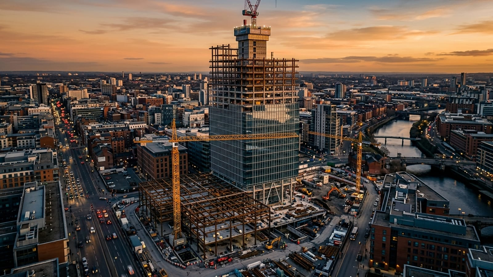

🔨
Civil
Roads, bridges, and public infrastructure that connect communities and keep cities moving.

Since 1998, we have delivered landmark developments across commercial, residential, and infrastructure sectors. Our integrated approach — design, engineering, and construction under one roof — ensures every project is delivered on time, on budget, and beyond expectation.
From iconic skyline towers to community-first residential developments, our team of 200+ skilled professionals brings precision and passion to every build.

Deep expertise across the full spectrum of construction disciplines.
Roads, bridges, and public infrastructure that connect communities and keep cities moving.
Office buildings, retail centres, and mixed-use developments built for long-term performance.
Custom homes and multi-unit developments crafted with care and precision.
A selection of our most impactful completed developments.